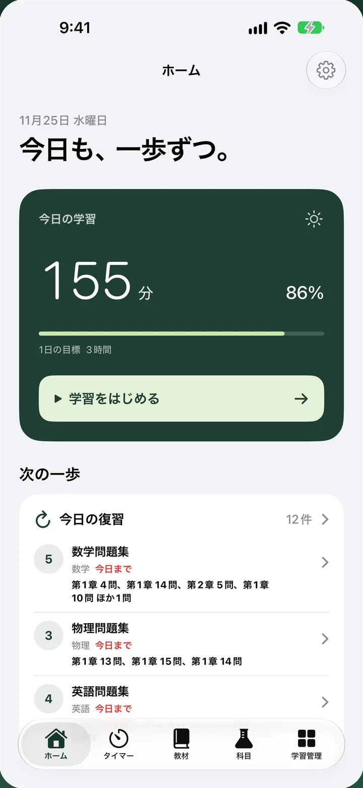
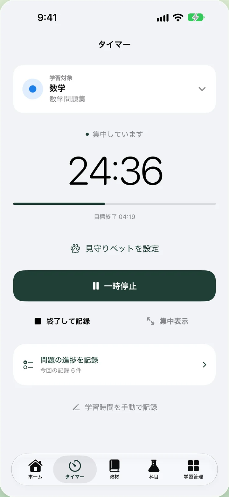
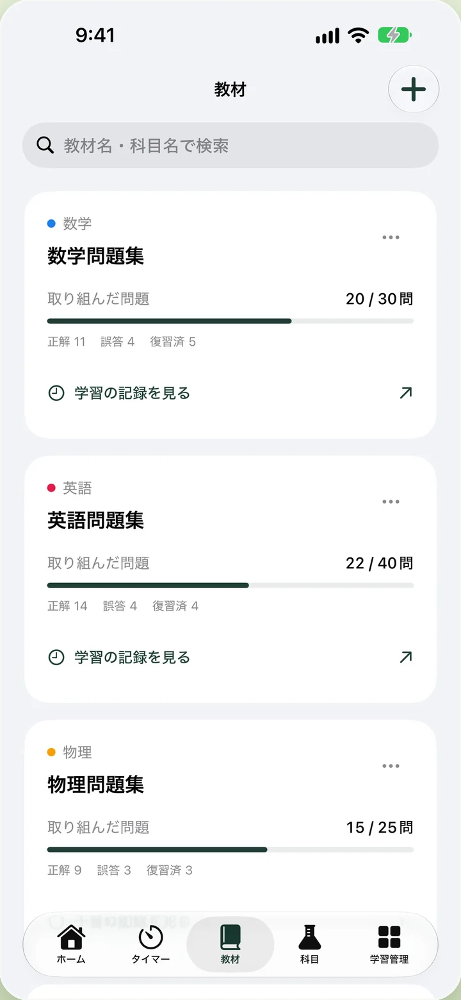
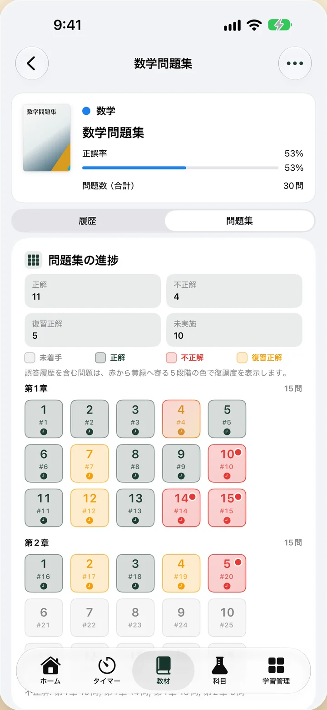
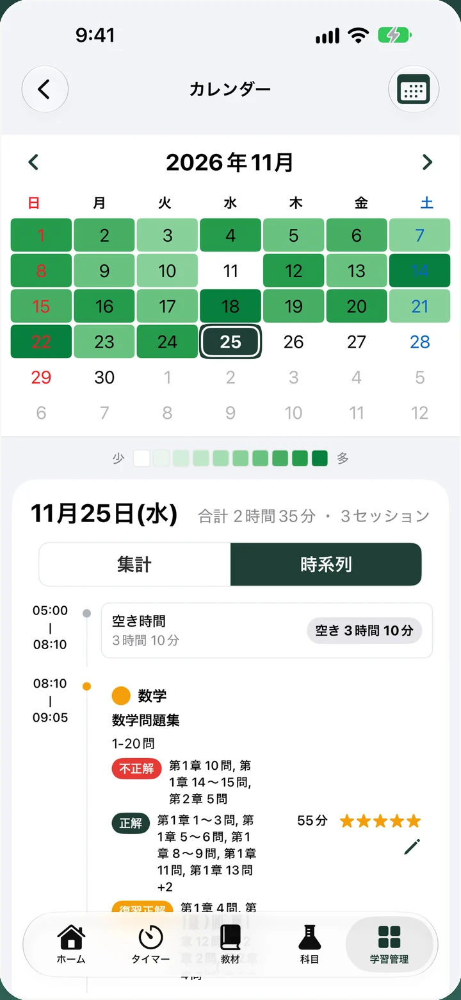
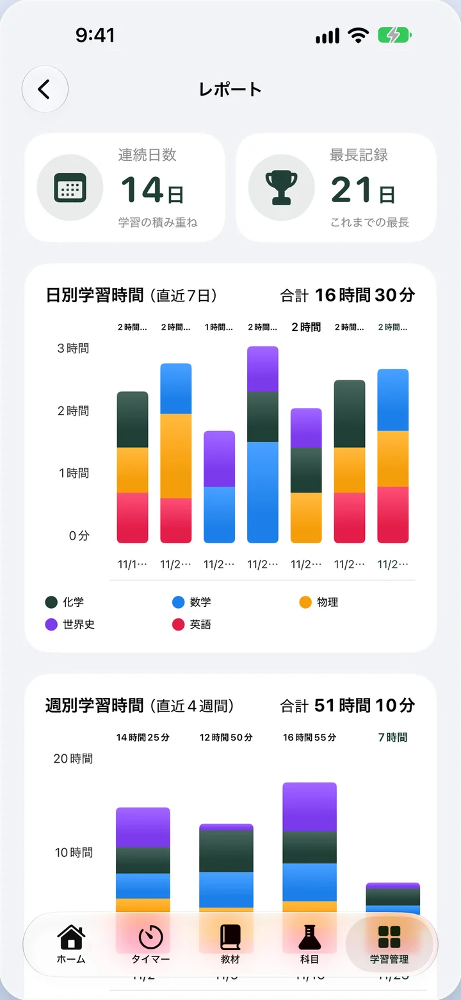
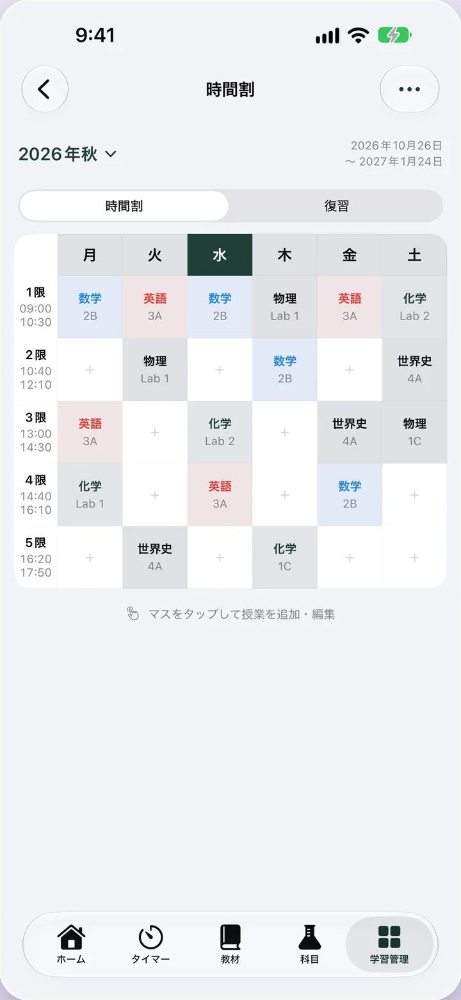
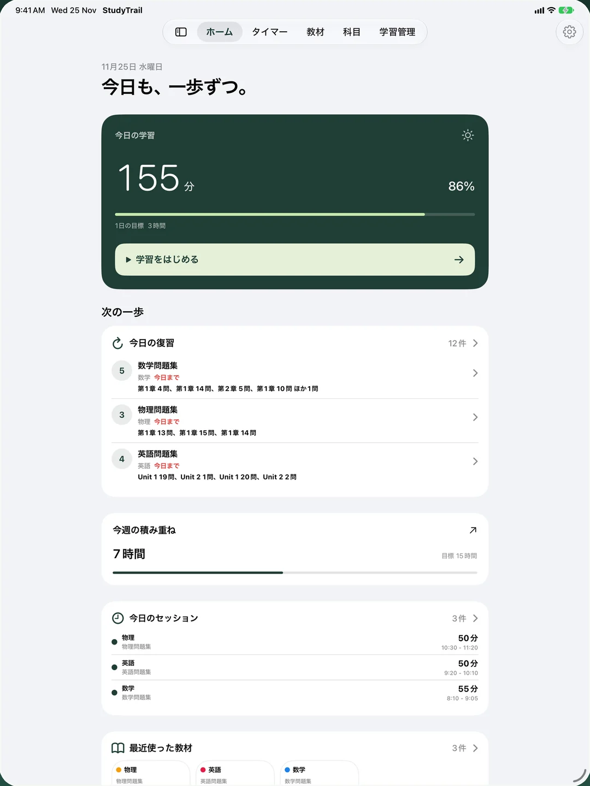

タイマー＆集中モード
- ストップウォッチ（カウントアップ）
- カウントダウン（ポモドーロ法対応）
- 過去の学習時間を手動入力・編集
- 計測中の問題正誤・小問進捗記録
- 横画面集中表示＆置き時計モード
- ロック画面＆Dynamic Island ライブアクティビティ
- 見守りペット（オンデバイス人物検出・映像保存なし）
勉強タイマー、参考書の問題進捗と自動復習、スマホの集中制限、時間割、試験カウントダウンまで。「どれだけ勉強したか」だけでなく、「次に何を復習すべきか」まで迷わず続けられる学習空間です。
iPhone（iOS 16+） iPad（Split View対応） Android（8.0+）
登録なしですぐ開始
ホーム・ロック画面対応
ネイティブ多言語対応

ホーム：今日の学習進捗と「次の一歩」の自動復習を一目で把握
StudyTrail の6つの柱
計測・教材管理・復習提案・スマホ制限・時間割・振り返りをひとつの落ち着いたインターフェースに統合しました。
ストップウォッチ・カウントダウン（25分ポモドーロ等）・手動入力に対応。計測しながら解いた問題の正誤や小問の進捗までその場で記録できます。
机に置いて集中できるダーク全画面表示と、余計な情報を省いたシンプルな置き時計表示。
ロック画面や Dynamic Island から残り時間を常時確認。アプリを閉じても計測が継続します。
カメラの端末内人物検出だけで勉強中の在席をやさしく見守り。カメラ映像は一切表示・録画・外部送信されない安心設計です。



ISBN バーコードスキャンで参考書をかんたん登録。ページ単位・問題番号・小問単位まで細かく記録でき、間違えた問題の回復度を赤から黄緑の5段階カラーで可視化します。
Apple Family Controls と連携し、勉強タイマー・時間帯・1日の目標・場所の4つのルールで誘惑アプリをブロック。さらにチケット制や設定の期間固定ロックで、つい解除してしまう抜け道まで防ぎます。
※ 場所ルール（ジオフェンス判定）の位置情報は端末内のみで処理され、サーバーや外部へ送信されません。
タイマー計測中は自動でSNSや動画を遮断。集中が途切れません。
夜の勉強時間や就寝前の「使用禁止」と、休憩の「無料開放」を設定。
今日の目標時間をクリアするまでロック。達成でボーナス持ち時間を付与。
地図で指定した場所に入ると自動制限。端末内処理でプライバシーも安心。
学習量の濃淡がひと目でわかるカレンダーヒートマップと、空き時間まで可視化する日別タイムライン。さらに日・週・月の科目別レポートと連続学習日数でペースを掴めます。
「集計」と「時系列」をワンタップで切替。解いた問題番号・正誤バッジ・評価まで1日の流れで振り返れます。
1週間の記録を美しい画像にしてSNS共有。個人的なメモや教材名は自動で除かれるため安心です。



学期ごとの時間割と授業復習リマインド、受験や定期テストのカウントダウン、曜日別の1日目標・週間学習計画まで、学生と資格受験者に必要な予定管理を網羅しています。
月〜土・時限カスタム対応。未復習の授業をリマインド通知。
共テ・入試・定期テスト・資格試験の残り日数を一覧＆ウィジェット表示。
平日・休日ごとの目標時間や科目別の週間計画を無理なく運用。
iPad の大画面・Split View・サイドバー操作に最適化。さらに9種類のホーム画面・ロック画面ウィジェットで、アプリを開かずに今日の学習や試験までの残り日数を確認できます。
複数端末で必要なときだけ同期。競合解決UIとアプリ内アカウント完全削除にも対応。
全データをJSONバックアップ・CSV出力可能。復元前には自動セーフティバックアップを作成。

機能一覧
毎日の計測から、参考書の周回、スマホ制限、バックアップまで。必要な機能をすべて丁寧に揃えています。
日本語・英語・韓国語・中国語（簡体字/繁体字）・欧州言語・インド諸語・アラビア語・ヘブライ語（RTL）まで対応
こんな方におすすめ
科目別の勉強時間と参考書の周回状況を一元管理。試験カウントダウンで本番までのペースを崩しません。
時間割と授業復習リマインドで日々の抜け漏れを防止。テスト前だけ慌てない習慣が身につきます。
問題集の間違えた問題だけを 1・3・7・14日後に自動提案。限られた社会人の勉強時間でも効率よく定着します。
勉強中や学校・図書館でのSNSブロックと持ち時間ルールで、自然と机に向かえる環境を作れます。
StudyTrail
アカウント作成なし・広告なし。インストールしてすぐ、最初の1分から記録できます。日々の小さな積み上げを、確かな自信へ。